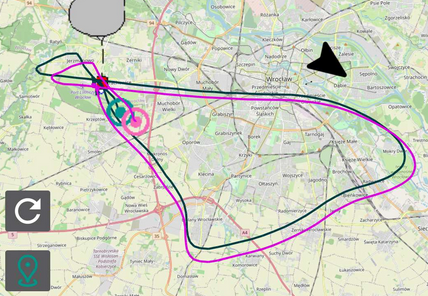
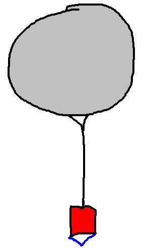
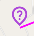
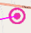
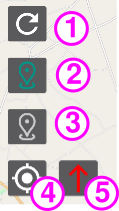

1. Data source status
2. Current Sonde position data
3. Landing prediction data
Data source status section consist of three letters S R L.
S - Sondehub source. R - Radiosondy source. L - Local source.
Letters can be green, yellow or red For letters S and R, green color represents working connection and that data is succesfully downloaded.
1. Altitude over sea level
2. Vertical speed - can be positive(up) or negative(down). If not known (r:) with predicted rate is displayed
3. Height over ground
4. Data source - which source provides data to this section. Best source is selected automatically (the newest postion)
5. Distance and bearing to current sonde postion.
6. Time elapsed from start
7. Data age - how old is the displayed position
If N/A is displayed, it means that data for this field is missing.
If NO GPS is displayed, that means the location of your phone is not known. Check if you have Location enabled in system settings.
If it is enabled, you have to wait for a GPS fix.
If NO DATA is displayed, check your SETTINGS source configuration and sonde numbers, because there is no data available to display!
If using remote sources, check if you have an Internet connection.
1. Data source - which source provides data to this section. Best source is selected automatically (Sondehub has live predictions and will be prioritized in this section)
2. Distance and bearing to predicted landing position
3. Time left to predicted landing, but if time is negative, it means time elapsed from sonde landing
4. Data age - how long ago the prediction changed (this doesn't mean the prediction is not downloaded, it may still predict the same location).
All of the pins and tracks displayed on the map are COLOR CODED.
Example map view:

Previous path of sonde is displayed with bold line on map. Downloading of previous sonde track is supported only from Radiosondy source. Other sources will create the path progressively when application is running.
 Sonde marker displays the current Sonde postion if it was received recently.
 Last known postion marker is displayed separetly for each source, if sonde postion wasn't updated recently (ex. >60s). Each marker represent last known postion from given source if position is no longer updated from it.
 This is a prediction marker. It displays landing position prediction for given source
Predicted Sonde path is displayed by thin line on map.
Note that, predictions from RADIOSONDY are static and updated only at start of Sone and after landing.
SONDEHUB provides dynamic predictions (that are update live, from current sonde position).
LOCAL source prediction is only a very simple interpolation of movement and descent rates and is meant to be used only for the last stage of flight (but it should be trusted too much either).

1. Force update data - causes data to be downloaded now. You shouldn't use this button in normal cases, beacause the data is automatically refreshed at reasonable rates (that are both prefectly usable and don't overload the APIs)
2. Center at prediction - centers map on prediction point.
3. Center on sonde - centers map on Sonde position
4. Cener on GPS - centers map on yout location
5. Rotate north - Resets orientation of map to north at top.
Enter Sonde number you want to track.
Note that sonde numbers for RADIOSONDY and SONDEHUB may be the same or different.
Field may be left empty to disable sssociated source.
Example: V2420380 uses the same number for both sources.
However ME9B00595 is valid for RADIOSONDY, but 204-2-00595 describes the same sonde for SONDEHUB.
You can use looking glass button to list and select currently flying Sondes.
IDs of already landed sondes are valid and supported, but not displayed on this list for obvious reasons. Archive data would be fetched for them.
RADIOSONDY list additionaly displays launch site name and if there are notifications sent (planned takings) for given Sonde.
NOTE: Android hotspots are tricky and change the (192.168.xxx.yyy) xxx part of address randomly. It is not possible to set a static ip for android hotspot.
Thats way you will see your PHONE ap0 ip address (when active) to help you determine your target device IP. The yyy part of address (asigned by DHCP to device) usually doesn't change. Interface scanning apps may be also helpful.
{
"valid": true,
"lat": 51.08846,
"lon": 16.97552,
"alt": 8043.37,
"vs": 6.3,
"time": 1688816444
}
SondeChaser app supports downloading data from MySondy GO TTGO Bluetooth device. Select MYSONDY from Locat Server Source menu
To connect to TTGO board you first need to pair it with System Settings (not with app).
Then, with Bluetooth enabled, press looking glass icon next to Select device address field and select your device from list.
Select corret Sonde Type from list and enter Sonde Freqency (ex. 403.000). This parameters will configure MySondy device at connection.
You can monitor connection status by L field in Data View (in Map screen, described here in section 1.1).
App will automatically try to reconnect to device when disconnected, but you may try saving settigns again if something is not working.
Support for this device is currently EXPERIMENTAL, and may not work properly.
Keep screen awake will prevent your screen from going to sleep when the app is running.
Prees the Save button to save your changed settings!
Compass view can be entered by left side panel (opened by ☰).
Compass view may help you guide to the selected point.
PREDITCION and POSTIONS points from all (LOCAL, RADIOSONDY, SONDEHUB) sources coudl be selected
Select your Point of Interest from upper menu (above compass).
Red cross over compass means that the selected point is not available. Select other point or check your data sources.
Green compass arrow shows direction to the target point.
Thin red arrow shows North direction.
Dot will appear on compass when you are close to target, and will show your distance in logarythmic scale.
SondeChaser is ❤ Open Source and provided under MIT Licesnse.
© 2023 by Piotr Węgrzyn
You can find project sources and releases here: github.com/piotro888/sondechaserSondeChaser displays Sonde data from following sources: